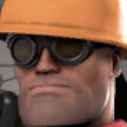
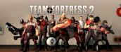
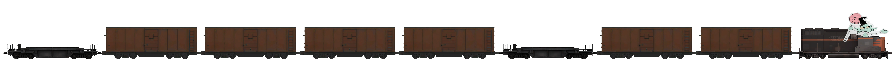

Admin's tip of the day:
Cheat and you're ass is bacon.
Cheat and you're ass is bacon.


NEWS
Team Forteres 2 released!
Team Fortress 2 is a class-based first-person and third-person shooter game developed by Valve Corporation, and the sequel to Team Fortress Classic. There are two playable teams, RED and BLU, which you can enter and complete objectives in different game modes. You can choose nine classes which are Scout, Medic, Demoman, Soldier, Heavy, Sniper, Spy, Pyro, and...